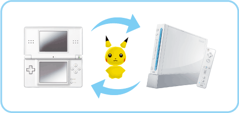
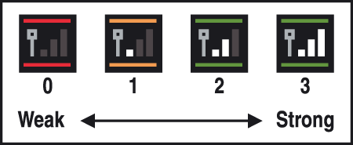

12 |
Preparing to Connect to a Nintendo DS system |
 |
You must meet the following conditions to deposit to or withdraw Pokémon from Pokémon Diamond or Pokémon Pearl.
■ What You’ll Need ● One Nintendo DS or Nintendo DS Lite system ● One Nintendo DS Pokémon Diamond or Pokémon Pearl Game Card Note: My Pokémon Ranch can only connect to Pokémon Diamond and Pokémon Pearl Game Cards that are the same language as the My Pokémon Ranch save data. Please see 
Precautions Related to Network Play
Be aware of the following regarding network play.
● The DS Wireless Icon ● The Reception Strength Icon  Note: When the Wireless Communications feature is enabled, the power indicator LED of the Nintendo DS system will blink at a different rate. ● In order to communicate smoothly, keep the following information in mind when engaging in communications play. ・ Keep the Nintendo DS system within 10 metres (approx. 33 feet) of the Wii console, or maintain a distance in which there are two or more antennas showing on the Reception Strength Icon. ・ Try to keep people, objects, or other items from coming between the Wii console and the Nintendo DS system, because they may interfere with the communications. ・ If the connection is being interrupted by devices that can cause electrical interference (such as microwave ovens or cordless devices), either move the Wii console away from these devices or stop using the device or devices causing the interference. |
 |
 |
 |